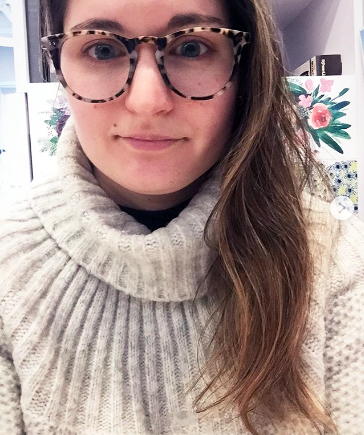

MY PORTFOLIO
MEET THE ARTIST
Hello! My name is Kate Ackerman, and I am a passionate designer who enjoys working with her hands and computer to create beautifully designed products.
My career in design started in the Fashion Industry! I enjoyed the work, but found the industry to be too toxic and harmful to people and the environment! Now I am focusing my talents in different fields that allign more with my moral code.
